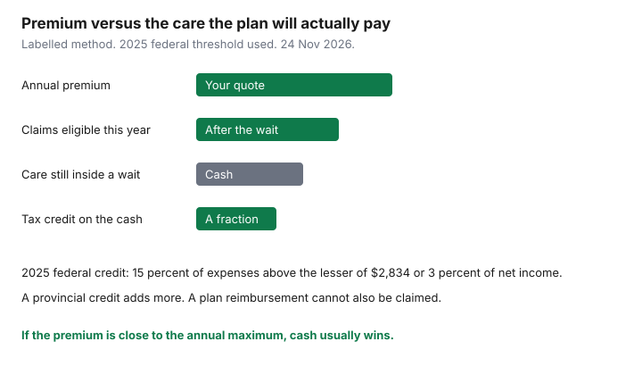

Insurance · Canada
Health and Dental Gap Coverage in Canada When You Have No Workplace Plan
Provincial health plans pay physicians and hospitals. They do not pay the dentist, most physiotherapy, most prescriptions outside a hospital, or a pair of glasses. A workplace plan used to fill that list. Contractors, people between jobs, and households who left a job years before a seniors’ drug program starts meet the bills in full. An individual health and dental policy can fill some of the list. It can also cost more than the care you will actually use, once waiting periods, annual maximums, and exclusions are counted. This page is the comparison: what the province already insures, what a private plan typically sells, when the medical expense tax credit changes the cash price, and when an emergency fund beats a thin policy. It is education, not a quote and not tax advice.
If you still have two workplace plans, the claim order is on the coordination guide. If the gap is monthly income because you are self-employed, that is the disability guide. This page does not replace either.
Disclosure: Education only. There is no natural affiliate offer for these plans on this page. Saving Optimizer does not claim a partnership with any insurer. Individual health and dental policies are a product category you can shop. We do not rank them. Figures were read on 24 Nov 2026 from the CRA, Assuris, and Ontario pages cited. Booklets differ. This is not tax advice.
Key takeaways
- Start from the provincial insured list. Private “gap” coverage is dental, drugs, paramedical care, and vision — the rows the health card leaves blank.
- Compare a plan with paying cash plus the medical expense tax credit. For 2025, the federal credit uses eligible expenses above the lesser of $2,834 or 3 percent of net income. The credit is not a reimbursement of the whole bill.
- Read the drug formulary and the annual maximum before you buy. A low maximum on dental major work does not fund a crown.
- Major dental often has a waiting period measured in months. A policy bought the week of a scheduled crown may pay nothing for that crown.
- A Canadian health spending account is a private health services plan, not a U.S. health savings account. Whether premiums are deductible is a filing question.
Map provincial insured services vs typical private gaps (dental, physio, drugs, glasses)
Write two columns. Column A is what your provincial plan pays with a valid card. Column B is what you paid out of pocket last year and what you already know is coming. A private plan is only useful on column B, and only on the rows the contract lists.
| Care | Typical provincial role | Typical private-plan role |
|---|---|---|
| Physician and public hospital | Insured when medically necessary. This is the card. | Usually not what you are buying. A hospital cash benefit is a different, smaller product. Do not pay for a duplicate of OHIP, MSP, AHCIP, or RAMQ. |
| Prescription drugs | Not a general benefit for working-age adults. Provincial programs exist for seniors, people on income assistance, and some catastrophic or universal designs. Québec’s public plan is mandatory if you do not have private coverage. | A formulary, a deductible, a percentage, and an annual or lifetime maximum. Read them. The workplace drug guide is the employed version of this reading. |
| Dental | Limited. Some provinces cover children, seniors, or hospital dental surgery. Routine adult care is usually private. | Basic (exams, cleanings, fillings) versus major (crowns, bridges) versus orthodontics. Each can have its own percentage, maximum, and waiting period. |
| Physiotherapy, massage, chiropractic, mental health therapists | Mostly outside the physician list, except where a province has a narrow public program. | Per-visit caps and an annual maximum per practitioner type. The provider must match the booklet’s registration rule. |
| Glasses and eye exams | Eye exams may be insured at certain ages. Glasses usually are not, except specific public programs. | A small annual or biennial maximum. A $200 vision maximum does not buy the glasses. It reduces them. |
Québec is the structural exception on drugs. If you do not have a private plan, RAMQ’s public prescription drug insurance is the plan you are in, not an optional extra. A private policy that tries to sit “instead of RAMQ” has to meet Québec’s minimum. Do not import an Ontario individual-plan quote into a Québec decision. The rest of this page is the framework. The provincial drug program, if you have one, comes off the bill before a private premium is worth paying.
Individual/family health & dental plans vs paying cash + tax credits
A plan is worth more than cash only when the benefits you will actually be eligible to claim, after waiting periods and maximums, exceed the premium by enough to matter. The medical expense tax credit changes the cash side. It does not make cash free.
The Canada Revenue Agency’s 2025 medical expense guide says you claim eligible expenses minus the lesser of $2,834 or 3 percent of your net income (line 23600). The federal credit is 15 percent of what remains. Provinces have a parallel credit. CRA’s example: someone with $55,000 of net income and $6,300 of expenses subtracts 3 percent, which is $1,650, and claims $4,650. Fifteen percent of $4,650 is $697.50 federal, before the provincial credit. Premiums for a private health services plan can themselves be eligible medical expenses in many cases. A reimbursement the plan already paid is not also a medical expense for the same dollars. The lower-income spouse usually produces the larger credit because 3 percent of a smaller income is a smaller threshold. That is a filing choice, not a reason to buy a plan.

| Net income | Threshold | If eligible expenses are $4,000 |
|---|---|---|
| $50,000 | 3 percent is $1,500, which is less than $2,834 | $2,500 counts. Federal credit at 15 percent is $375, before the province. |
| $120,000 | 3 percent is $3,600, so the threshold caps at $2,834 | $1,166 counts. Federal credit at 15 percent is $174.90, before the province. |
Use a twelve-month window of real expenses, which is what the credit allows, not a guess that you might need a crown. If the crown is speculative, it does not belong in the “cash is expensive” column. If the crown is booked, it belongs in the waiting-period test below, because a new plan may not pay it.
Drug formularies and annual maxima—read before you buy
Individual plans copy the shape of workplace plans and then shrink the maximums. Before you compare premiums, copy five fields from each contract:
- The drug list. Preferred, restricted, and excluded mean the same thing as on a workplace plan. A drug you already take that is excluded is a cash bill forever on that contract. The workplace guide walks through prior authorization. An individual plan can require it too.
- The annual drug maximum, and any lifetime maximum. A $2,000 drug cap is a different product from an open formulary. Specialty drugs blow through small caps in a month.
- The dental annual maximum, split by basic and major if the contract splits them. A $750 basic maximum and a $0 major maximum will not fund a crown even after the waiting period.
- The paramedical maximum per practitioner, and the per-visit cap. A $500 physiotherapy maximum against a $110 visit is a handful of visits, not a treatment plan.
- Whether the plan coordinates with a spouse’s plan. If your spouse has a workplace plan, you may already be a dependant. Buying a full individual plan on top can be redundant. Coordination rules are on the two-plan guide.
Assuris protects a health-expense benefit at a member insurer for the greater of $250,000 or 90 percent of the benefit if that company fails. Supplementary medical insurance is in that category. The protection matters if the insurer fails. It does not raise a $750 dental maximum. Size the maximum for the care you use. Treat Assuris as failure protection, not as the benefit.
Waiting periods for dental major work
Individual dental contracts commonly make you wait before major services are eligible. Three months for basic care and twelve months for crowns, bridges, and dentures are patterns shoppers see. They are not a statute. The contract’s number is the number. Orthodontics often has its own wait and its own lifetime maximum. A plan bought because a dentist already recommended a crown will often exclude that crown, either by the waiting period or by a pre-existing treatment clause.
If the appointment is already booked, price the crown as cash. Then ask what the plan will pay for the next crown, after the wait, and whether that future benefit is larger than the premiums you will pay in the meantime.
Recall exams and cleanings are the care most likely to fall inside a short wait, and they are also the care a healthy household can sometimes pay in cash for less than the premium. Run the quote both ways. A plan that pays 80 percent of a $250 cleaning, once a year, against a $1,200 premium, is not “80 percent off dental.” It is a premium that has to be earned by drugs and other visits too. If those other visits are not in your year, the cleaning does not save the policy.
Some contracts waive the waiting period if you are replacing a workplace plan within a stated number of days after it ended. That waiver is the most valuable sentence in an individual contract for someone who just left a job. Get it in writing, with the date the group plan ended. Miss the window and the waits apply in full. The pre-65 bridge guide is the same question when the group plan ends at retirement rather than at a resignation.
Self-employed: pair with EHCP/HSA strategy carefully (tax advice caveat)
An extended health care plan and a health spending account are two ways a business can fund column B. They are not automatically a tax shelter.
- Private health services plan. When a plan qualifies under the Income Tax Act, the benefit is aimed at eligible medical expenses, and the premium treatment depends on who pays and whether you have arm’s-length employees. A sole proprietor does not get to invent a deduction by calling a bank account an HSA. The CRA folio and your filer decide. This page will not give you a percentage.
- Health spending account. In Canada this is an employer-funded account that reimburses eligible expenses, often after any insured plan. It is not a U.S. health savings account. Unused balances may forfeit. You cannot claim the same dollar as a medical expense and as a reimbursement.
- Insured plan versus account. An insured individual plan pools risk: a large drug bill can exceed the premium. An account only returns money that was deposited, minus fees. If your spending is predictable and under the tax-credit threshold, the account’s fee can be the most expensive part. If your spending is a rare large drug, insurance is the tool that is built for that, subject to the maximum.
- Disability premiums are a different line. Do not run income-replacement premiums through a health spending account to “make them medical.” They are not the same product. Keep the income policy separate.
Incorporated owners should ask the filer two questions in writing: is this plan a private health services plan for our facts, and what happens to the deduction if we have no arm’s-length staff? A yes on a blog and a no on the assessment are different outcomes.
When an emergency fund beats thin gap insurance
Thin coverage has a low annual maximum, a long waiting period, and a premium that is a large fraction of the maximum. It fails the comparison when any of these are true:
- The premium plus the deductible is close to the maximum the plan will pay this year. You are prepaying the care and adding the insurer’s costs.
- The care you need is inside a waiting period or on the exclusion list. The plan cannot win that year. Cash can.
- You already have a provincial catastrophic drug program that starts after a deductible you can fund. Ontario’s Trillium Drug Program, for example, is for residents whose drug costs are high relative to income, with a deductible usually about 4 percent of after-tax household income, then a co-payment up to $2. It is not a dental plan. It can make a small private drug cap unnecessary. Confirm eligibility on the Ontario page. Other provinces have their own catastrophic designs. Use yours, not a neighbour’s.
- You can hold the annual maximum in a named savings account and you do not need the pooling a large drug would require. The account has no waiting period and no formulary. It also has no pooling. A $40,000 drug is why insurance exists. A $400 cleaning is why cash exists.
A practical split many households can defend: cash or a spending account for dental and vision up to an amount you can see, a provincial catastrophic program for drugs once you qualify, and a private drug plan only when the formulary covers a drug you already take and the premium is smaller than the uninsured portion. Revisit the split when a job with benefits starts, or when you are inside the window to replace a plan you are about to lose. Write the renewal date on the annual review so a thin plan does not auto-renew after the maximum stopped matching your year.
Sources & date stamps
- Canada Revenue Agency, Medical Expenses 2025 — line 33099 threshold is the lesser of $2,834 or 3 percent of net income; federal credit at the lowest rate. Used 24 Nov 2026. The fixed amount is indexed. Confirm the year you are filing.
- Ontario, what OHIP covers — physicians, hospitals, and a defined list; updated 22 Apr 2026. Dental, most drugs, and most paramedical care are not on that list. Used 24 Nov 2026.
- Ontario, Trillium Drug Program — deductible usually about 4 percent of after-tax household income, then up to $2 per prescription. Used 24 Nov 2026.
- Assuris, supplementary medical insurance — greater of $250,000 or 90 percent if a member insurer fails. Used 24 Nov 2026.
- RAMQ public drug insurance is mandatory in Québec when you have no private plan. Confirm on the RAMQ site for your status. Waiting periods and maximums are contractual, not national.
Frequently asked questions
Does a provincial health card include dental and prescriptions?
Not as a general rule for working-age adults. The card pays medically necessary physician and hospital services. Dental, physiotherapy, glasses, and most pharmacy drugs are the private gap, unless a specific provincial program covers you. Québec requires public drug coverage when you do not have a private plan.
Will the medical expense tax credit replace insurance?
No. For 2025 you claim eligible expenses above the lesser of $2,834 or 3 percent of net income. The federal credit is 15 percent of that excess, plus a provincial credit. A $4,000 bill does not come back as $4,000. Premiums may be eligible expenses. Amounts a plan reimbursed are not claimed twice.
Can I buy a plan this month for a crown next month?
Often no. Major dental waiting periods are commonly measured in months, and a treatment already planned can be excluded. The contract states the wait. If the crown is booked, treat it as cash and judge the plan on the next one.
Is a Canadian health spending account the same as a U.S. HSA?
No. A Canadian account that qualifies is a private health services plan. It reimburses eligible expenses, often with a use-it-or-lose-it rule. It is not a sheltered investment account. Ask your tax filer before you deduct a premium. This page is not tax advice.
Is this insurance advice?
No. Education only. We do not claim a partnership with any insurer and we do not rank plans. The booklet, the provincial program, and CRA’s medical-expense guide control.